<i>Alternatywa: <a href="https://www.hackerearth.com/practice/algorithms/sorting/" target="_blank"
		rel="noopener noreferrer">hackerearth.com</a></i>
<h1>Kalkulator</h1>
Algorytm sortowania: <select id="algorithm">
	<optgroup label="- Proste -">
		<option value="bubble" selected>bąbelkowe</option>
		<option value="insertion">przez wstawianie</option>
		<option value="insertion-partial">przez wstawianie połówkowe</option>
		<option value="selection">przez wybieranie</option>
	</optgroup>

	<optgroup label="- Złożone -">
		<option value="quicksort">szybkie</option>
		<option value="stack">stogowe</option>
	</optgroup>
</select><br>

tablica (elementy oddziel spacją): <input type="text" id="arrayData"><br>
kierunek sortowania: <select id="order">
	<option value="desc">od największego (malejąco)</option>
	<option value="asc">od najmniejszego (rosnąco)</option>
</select><br>
ilość przebiegów<sup>*</sup>: <input type="number" id="max_iterations" min="0" value="0"><br>
ilość zamian<sup>*</sup>: <input type="number" id="max_swaps" min="0" value="0"><br>
<input type="button" value="Sortuj" onclick="sort()">

wynik: <textarea id="result" readonly disabled rows="1" cols="30"></textarea><span id="swaps-count"></span><br><br>

<sup>*</sup> 0/null - bez limitu<br>

<script>
	// Pobranie danych z formularza
	var item_algorithm = document.getElementById("algorithm");
	var item_inputArray = document.getElementById("arrayData");
	var item_order = document.getElementById("order");
	var item_maxIterations = document.getElementById("max_iterations");
	var item_maxSwaps = document.getElementById("max_swaps");

	item_algorithm.addEventListener("input", sort);
	item_inputArray.addEventListener("input", sort);
	item_order.addEventListener("input", sort);
	item_maxIterations.addEventListener("input", sort);
	item_maxSwaps.addEventListener("input", sort);

	function sort() {
		// Pobranie danych z formularza
		var algorithm = document.getElementById("algorithm").value;
		var inputArray = document.getElementById("arrayData").value;
		var array = inputArray.split(' ') // Przetworzenie tablicy
		console.log(array);
		console.log('First: ' + array[0] + '; Last: ' + array[array.length - 1]);
		var order = document.getElementById("order").value;
		if (parseInt(document.getElementById("max_iterations").value) === 0 || document.getElementById("max_iterations").value == "") {
			var maxIterations = array.length;
		} else {
			var maxIterations = parseInt(document.getElementById("max_iterations").value);
		}
		if (parseInt(document.getElementById("max_swaps").value) === 0 || document.getElementById("max_swaps").value == "") {
			var maxSwaps = array.length * (array.length - 1) / 2;
		} else {
			var maxSwaps = parseInt(document.getElementById("max_swaps").value);
		}
		swaps = 0;
		iterations = 0;

		// Wywołanie odpowiedniego algorytmu sortowania
		var sortedArray;
		switch (algorithm) {
			case 'bubble':
				sortedArray = bubbleSort(array, order, maxIterations, maxSwaps);
				break;
			case 'insertion':
				sortedArray = insertionSort(array, order, maxIterations, maxSwaps);
				break;
			case 'insertion-partial':
				sortedArray = insertionSortPartial(array, order, maxIterations, maxSwaps);
				break;
			case 'selection':
				sortedArray = selectionSort(array, order, maxIterations, maxSwaps);
				break;
			case 'quicksort':
				sortedArray = quicksort(array, order, maxIterations, maxSwaps);
				break;
			case 'stack':
				sortedArray = stackSort(array, order, maxIterations, maxSwaps);
				break;
			default:
				alert('Nieobsługiwany algorytm sortowania');
				return;
		}

		// Wyświetlenie wyniku
		document.getElementById("result").value = sortedArray.join(' ');
		document.getElementById("swaps-count").innerText = ' (zamiany miejsc: ' + swaps + ')';
	}

	// Funkcja pomocnicza do zamiany miejscami elementów w tablicy
	function swap(arr, i, j) {
		var temp = arr[i];
		arr[i] = arr[j];
		arr[j] = temp;
		swaps++;
	}

	// Algorytm sortowania bąbelkowego
	function bubbleSort(arr, order, maxIterations, maxSwaps) {
		var n = arr.length;
		var iterations = 0;

		for (var i = 0; i < n - 1; i++) {
			for (var j = 0; j < n - 1 - i; j++) {
				if ((order === 'asc' && arr[j] > arr[j + 1]) || (order === 'desc' && arr[j] < arr[j + 1])) {
					swap(arr, j, j + 1);

					if (maxSwaps > 0 && swaps >= maxSwaps) {
						return arr;
					}
				}
			}

			iterations++;

			if (maxIterations > 0 && iterations >= maxIterations) {
				return arr;
			}
		}

		return arr;
	}

	// Algorytm sortowania przez wstawianie
	function insertionSort(arr, order, maxIterations, maxSwaps) {
		var n = arr.length;
		var iterations = 0;

		for (var i = 1; i < n; i++) {
			var current = arr[i];
			var j = i - 1;

			while (j >= 0 && ((order === 'asc' && arr[j] > current) || (order === 'desc' && arr[j] < current))) {
				arr[j + 1] = arr[j];
				j--;
			}

			arr[j + 1] = current;

			swaps++;
			if (maxSwaps > 0 && swaps >= maxSwaps) {
				return arr;
			}
			iterations++;
			if (maxIterations > 0 && iterations >= maxIterations) {
				return arr;
			}
		}

		return arr;
	}

	// Algorytm sortowania przez wstawianie połówkowe
	function insertionSortPartial(arr, order, maxIterations, maxSwaps) {
		var n = arr.length;
		var iterations = 0;

		for (var i = 1; i < n; i++) {
			var current = arr[i];
			var left = 0;
			var right = i - 1;

			// Wyszukiwanie binarne miejsca do wstawienia elementu
			while (left <= right) {
				var mid = Math.floor((left + right) / 2);

				if ((order === 'asc' && arr[mid] < current) || (order === 'desc' && arr[mid] > current)) {
					left = mid + 1;
				} else {
					right = mid - 1;
				}
			}

			// Przesuwanie elementów, aby zrobić miejsce dla aktualnego elementu
			for (var j = i - 1; j >= left; j--) {
				arr[j + 1] = arr[j];
			}

			arr[left] = current;

			swaps++;
			if (maxSwaps > 0 && swaps >= maxSwaps) {
				return arr;
			}
			iterations++;
			if (maxIterations > 0 && iterations >= maxIterations) {
				return arr;
			}
		}

		return arr;
	}

	// Algorytm sortowania przez wybieranie
	function selectionSort(arr, order, maxIterations, maxSwaps) {
		var n = arr.length;
		var iterations = 0;

		for (var i = 0; i < n - 1; i++) {
			var minIndex = i;

			for (var j = i + 1; j < n; j++) {
				if ((order === 'asc' && arr[j] < arr[minIndex]) || (order === 'desc' && arr[j] > arr[minIndex])) {
					minIndex = j;
				}
			}

			if (minIndex !== i) {
				swap(arr, i, minIndex);
				swaps++;

				if (maxSwaps > 0 && swaps >= maxSwaps) {
					return arr;
				}
			}

			iterations++;

			if (maxIterations > 0 && iterations >= maxIterations) {
				return arr;
			}
		}

		return arr;
	}

	// Algorytm sortowania szybkiego z ograniczeniem ilości minięć wskaźników
	function quicksort(array, maxIterations, maxSwaps) {
		const length = array.length;

		function innerQuicksort(first, last) {
			let main = array[first];
			let i = first;
			let j = last;

			while (i < j) {
				if (i > j) {
					iterations++;
					if (iterations >= maxIterations) {
						return;
					}
				}

				while (array[i] < main) {
					i++;
				}
				while (array[j] > main) {
					j--;
				}


				if (i <= j) {
					if (swaps >= maxSwaps) {
						return;
					}

					// Zamiana miejscami elementów na pozycjach i i j
					var help = array[i];
					array[i] = array[j];
					array[j] = help;

					swaps++;
					i++;
					j--;

				}
			}

			if (first < j) {
				innerQuicksort(first, j);
			}
			if (i < last) {
				innerQuicksort(i, last);
			}
		}

		// Rozpoczęcie sortowania
		innerQuicksort(0, length - 1);

		return array;
	}


	// Algorytm sortowania stogowego
	function stackSort(arr, order, maxIterations, maxSwaps) {
		function heapify(arr, n, i) {
			var largest = i;
			var left = 2 * i + 1;
			var right = 2 * i + 2;

			if (left < n && ((order === 'asc' && arr[left] > arr[largest]) || (order === 'desc' && arr[left] < arr[largest]))) {
				largest = left;
			}

			if (right < n && ((order === 'asc' && arr[right] > arr[largest]) || (order === 'desc' && arr[right] < arr[largest]))) {
				largest = right;
			}

			if (largest !== i) {
				swap(arr, i, largest);
				heapify(arr, n, largest);
				swaps++;

				if (maxSwaps !== 0 && swaps >= maxSwaps) {
					return arr;
				}
			}
		}

		function buildHeap(arr, n) {
			for (var i = Math.floor(n / 2) - 1; i >= 0; i--) {
				heapify(arr, n, i);
			}
		}

		var n = arr.length;
		var iterations = 0;

		buildHeap(arr, n);

		for (var i = n - 1; i >= 0; i--) {
			swap(arr, 0, i);
			heapify(arr, i, 0);
			swaps++;

			if (maxSwaps !== 0 && swaps >= maxSwaps) {
				return arr;
			}

			iterations++;

			if (maxIterations !== 0 && iterations >= maxIterations) {
				return arr;
			}
		}

		return arr;
	}
</script>

<hr>
<hr>

<h1>Sortowanie wewnętrzne</h1>
<h4>Założenia:</h4>
<ul>
	<li>
		bezpośredni dostęp do każdego elementu (np. poprzez jego wskaźnik) tablica mieści się w pamięci RAM;
	</li>
	<li>
		sortowanie za pomocą porównań i wymian elementów wewnątrz <u>jednej</u> tablicy - nie tworzy się nowych tablic
		i innych struktur pomocniczych
	</li>
</ul>

<hr>
<hr>

<h2>Proste</h2>
<hr>
<h3>Bąbelkowe</h3>
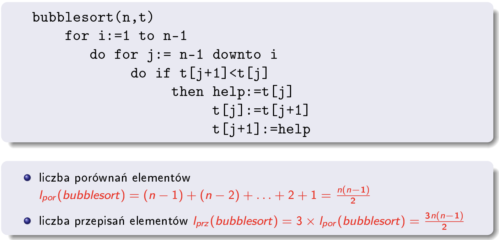<br>
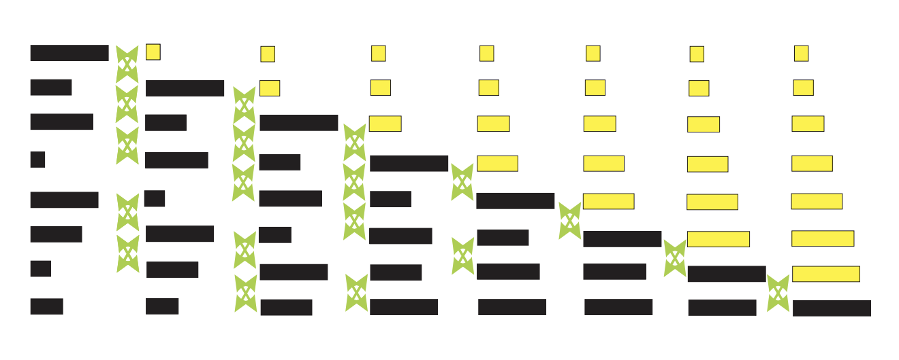<br>
<hr>

<h3>Przez wstawianie</h3>
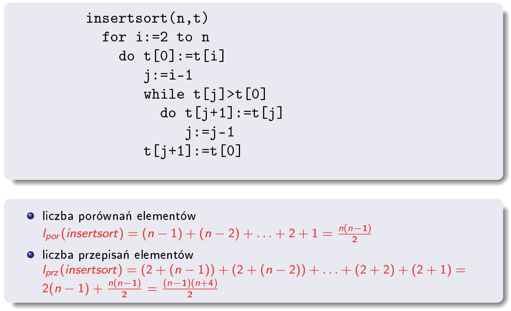<br>
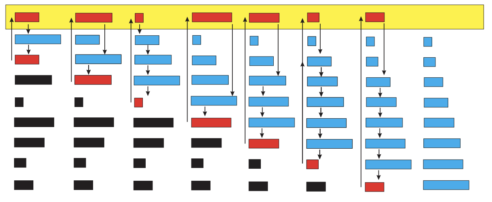<br>
<hr>

<h3>Przez wstawianie połówkowe</h3>
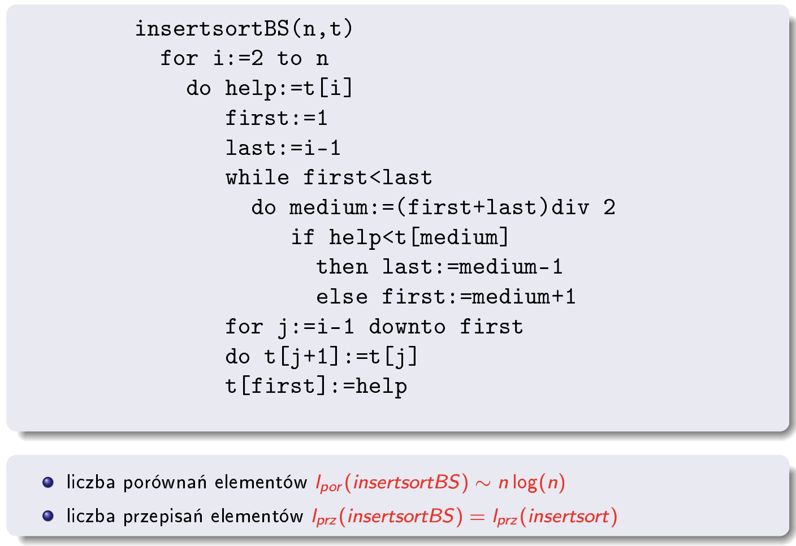<br>
<hr>

<h3>Przez wybieranie</h3>
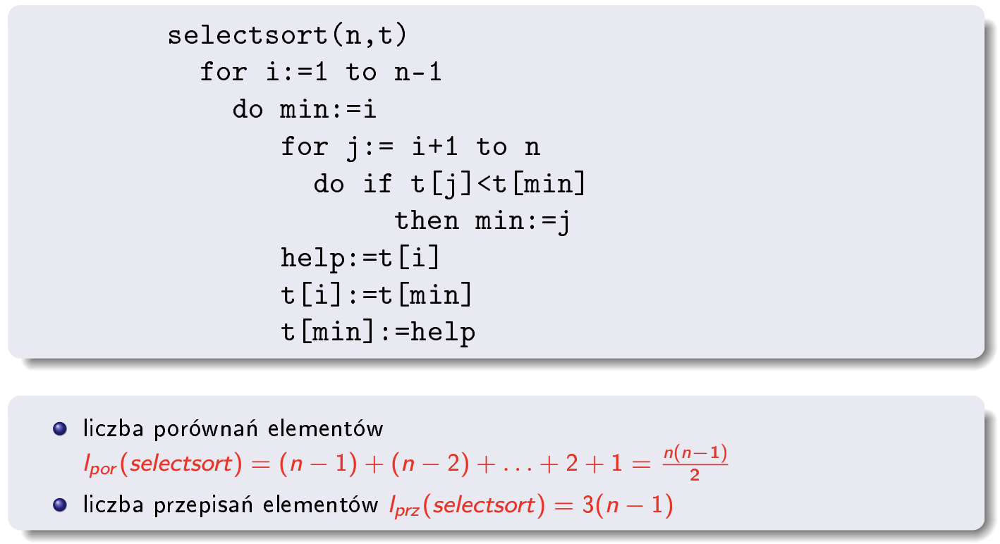<br>
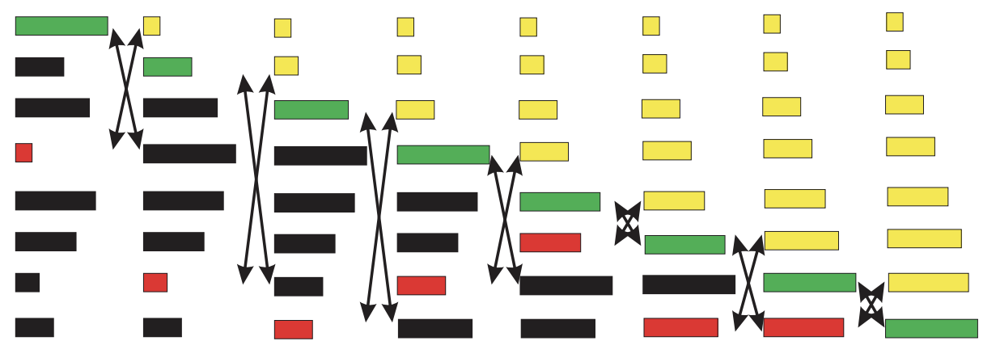<br>

<hr>
<hr>
<h2>Złożone</h2>

<h3>Szybkie</h3>
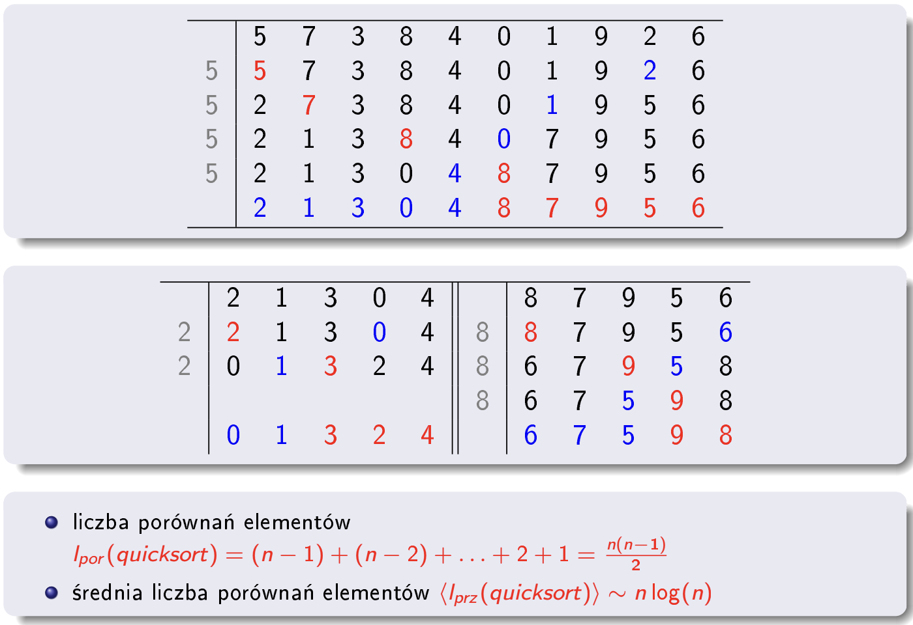<br>
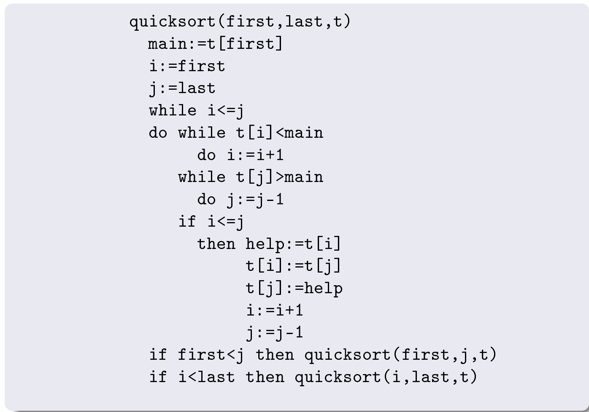<br>
<hr>

<h3>Stogowe</h3>
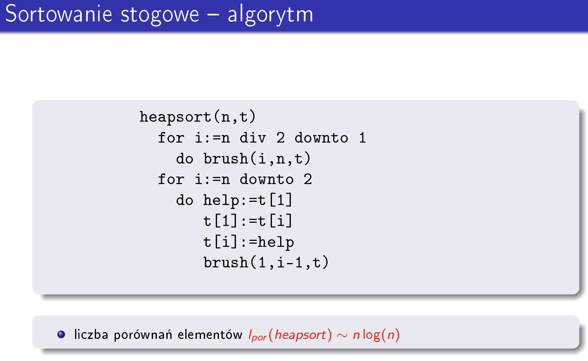<br>
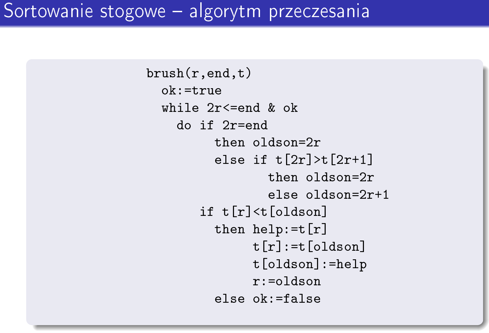<br>